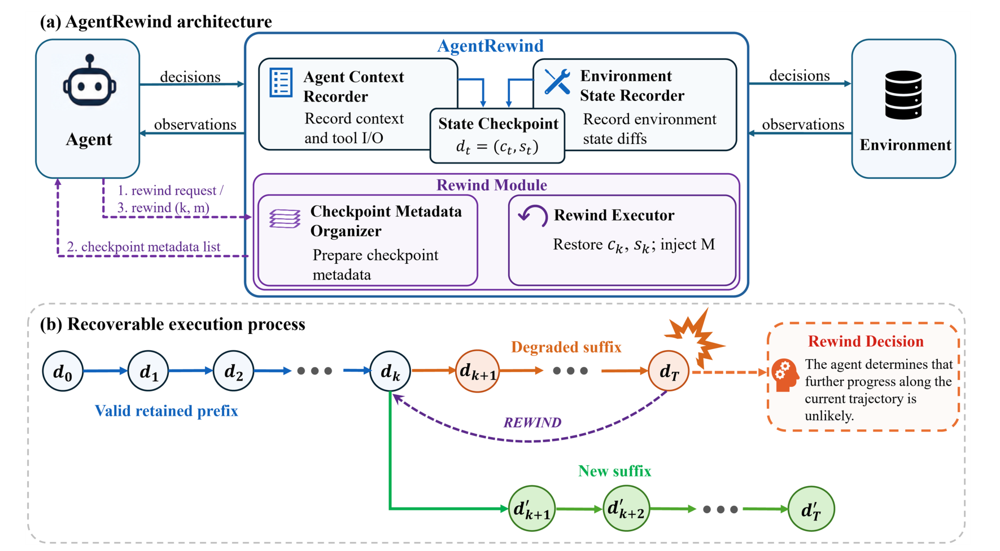

01研究背景与问题定义
长程工程任务中的一次错误，可能同时改变工作现场和模型对现场的认识。程序覆盖了必须保留的原始文件，后续步骤又基于错误结果继续编辑；等代理收到验证失败反馈时，单靠追加修补已经难以还原过去。AgentRewind 为执行过程增加了选择一个历史决策点、恢复对应现场，再带着失败教训重新继续的能力，使正确完成的前半段工作有机会保留下来。
错误会沿着文件状态和执行历史两条路径延续
代理每次根据上下文决定下一步，再通过工具改变环境。错误命令既会留下被修改的文件，也会留下工具输出、行动记录和中间结论。只把文件还原，模型可能仍认为已撤销的操作有效；只删掉错误历史，磁盘上的破坏又不会随之消失。这里需要恢复的是同一时点的“知道什么”和“现场是什么”，而不是孤立地清理其中一侧。
| 失败留下什么 | 对后续执行的影响 | 恢复时需要做什么 |
|---|---|---|
| 被覆盖、删除或新建的文件 | 后续命令在错误现场继续运行 | 恢复目标时点的受控文件状态 |
| 已放弃分支的动作、观察和判断 | 模型仍沿用失效的执行前提 | 恢复与该现场对齐的决策前上下文 |
| 直到失败后才得到的教训 | 若随历史一起删掉，可能重走旧路 | 独立保留经验，再注入恢复后的上下文 |
让“从哪里重新开始”成为执行中的可选决策
从头重启可以重新获得干净的起点，却也丢掉了已经完成的修复、验证和中间产物；即使带着经验重做，正确前缀仍会再次消耗执行资源并承担出错风险。若错误出现在任务后半段，更有价值的选择是回到错误之前，保留可用的工作，只替换导致失败的后续动作。
AgentRewind 因而把原本只能向前追加的轨迹，变成可以选择历史边界重新进入的轨迹。它在运行时记录成对的上下文与工作区状态，提供回退控制动作，并把失败经验留在回退边界之外。底层模型继续生成动作，运行时负责让一次局部重试有一致的起点。这一机制用日志、快照和恢复维护换取重做局部后缀的机会；收益取决于能否找到合适的重入点，以及关键副作用是否确实落在可恢复范围内。
02方法与技术路线
AgentRewind 位于代理与工具环境之间，正常执行时记录调用和文件变化；代理需要放弃当前路线时，再查询检查点、选择目标并提交回退。恢复不是让模型照着旧步骤重新操作，而是利用日志重建前缀、恢复文件快照，然后从目标决策点开始产生新的真实调用。
模型决策
读取当前上下文 cₜ，生成工具动作或提交结果。
工具执行
在工作区 sₜ 上运行；返回观察并留下文件变化。
反馈与继续
观察进入上下文；提交失败时收到验证反馈。
Agent Context Recorder 保存请求、输出与工具结果；Environment-state Recorder 保存文件版本。两者在 LLM 决策前配成 dₜ = (cₜ, sₜ)，相邻边界之间的动作和变化形成选点元数据。
查询候选
Checkpoint Metadata Organizer 整理历史边界；代理通过 backtrack_candidates 读取关联执行段。
选择 k，提交回退
模型选择检查点并写下新教训 m；调用 backtrack_commit。
新教训加入累计经验；它不随检查点恢复成旧版本，稍后作为一条系统消息注入。
Environment Recovery
读取目标决策前的文件版本，撤销受跟踪路径的修改、创建和删除。
Context Recovery
从日志返回前缀中的旧模型响应与工具结果，重建到 cₖ。
Resume · 从 (Inject(cₖ, M), sₖ) 生成替换后缀
在目标边界发起新的真实 LLM 调用，此后工具正常执行；继续记录新分支，可再次回退，也可提交任务结果。
整体任务在成功或重复失败终止规则下结束；回退工具本身不等于成功验证。文件恢复仅覆盖下文所列范围。
图中“成对恢复”描述目标状态的一致性；论文未据此建立任意外部副作用的撤销保证。
论文原图：运行时层与可恢复轨迹 · 点击展开

Aligned Checkpoints：把可恢复状态绑定到模型决策之前
一次 LLM 调用或工具调用各形成一条记录。模型记录保存完整请求消息、模型参数、工具定义及返回结果；工具记录保存名称、参数、结果和错误。每条记录还关联执行前后的工作区版本。实际恢复目标只能是 LLM 记录：系统需要回到“即将重新做出一次决策”的时刻，而不能把一条任意工具事件当成新的推理起点。
文件版本由工作区外的独立裸 Git 仓库维护，使用私有索引记录工作区内容，避免与任务本身的仓库混淆。一次调用的变化在下一条记录开始时提交，最后一条在运行结束时提交；因此，LLM 记录及其调用前版本共同确定 dₜ = (cₜ, sₜ)。两个 LLM 边界之间的工具记录，则说明这一段做了什么、改了什么，供后续选择回退点使用。
这种对齐比单独保存聊天记录更强：日志给出模型当时实际看到的输入，文件版本给出输入对应的现场。它也比只保存文件版本更完整，因为恢复旧文件后，模型不应继续拿着已放弃分支的观察推理。运行时维护的是两者的对应关系，选哪个历史状态重新开始仍由代理判断。
Rewind Module：先查看候选，再选择目标并写下失败经验
代理发现反复失败、矛盾或高风险操作时，可调用 backtrack_candidates 获取候选；实验中的候选展示数设为 80。代理结合候选元数据、当前轨迹、环境反馈与已有经验，判断错误可能从哪里开始，再调用 backtrack_commit，传入目标 LLM 记录的标识和必填经验摘要。工具记录不是有效提交目标。候选列表让历史边界可查，但论文没有给出保证找到根因的选点算法，不能把模型选择理解成确定性的最优定位。
回退前生成的新经验 m 可以概括被证伪的假设、破坏性动作及替代策略，并加入累计记忆 M。恢复后，全部累计经验以一条系统消息进入上下文。这样既撤掉了失败分支作为“当前执行事实”的地位，也保留了为什么应当换路的信息。经验不是模型权重更新，也不是跨任务训练数据；它是在当前任务的多次回退之间保留的文本。
k 是代理选择的历史决策点；cₖ 和 sₖ 分别是该点的上下文与受控文件状态。回到旧现场，但让新的决策知道此前尝试得到的教训。
经验必须跨越回退边界：若它也恢复成旧版本，新获得的教训就会消失；若把失败后缀全文重新塞回模型输入，又会保留大量失效行动和观察。摘要承担了选择性保留的工作，也使其质量成为依赖条件——运行时可以保证传入文本，却不能保证模型总结得正确、完整。
Rewind Executor：重建旧前缀，在目标边界恢复真实执行
提交回退不会像普通工具那样返回一条结果让当前会话继续。它发出控制信号，由会话之外的 runner 接住；runner 把目标记录、恢复上下文等信息写入日志旁的文件，再以新进程启动。新进程从这些落盘信息重建执行，避免依赖已放弃会话的内存状态。不同代理框架需要适配工具形式和这一控制信号的传递，因此共享恢复层仍需要各框架的运行器接入。
重建前缀时，遇到历史模型调用就返回日志中保存的响应，遇到历史工具调用就返回保存的工具结果；这些旧调用不会真的再次运行。与此同时，文件系统直接恢复到目标节点调用前的版本。到达目标 LLM 边界后，系统使用该处的请求消息并注入 M，才发起新的真实模型调用；后面的工具也恢复为真实执行。这里“保留正确前缀”是复用其记录和状态，并不要求模型重新完成同样的工作。
Environment Recovery：恢复范围由路径策略和状态类型限定
正文把受控环境称为工作区目录树，附录进一步限定了实际范围。恢复器比较当前文件树与目标版本：受跟踪文件中，目标没有的路径被删除，目标已有的内容被还原。排除路径、缓存和仓库元数据则有不同处理，不能把“在工作区内”直接等同于“已纳入快照”。
| 对象 | 快照 / 回退行为 | 对恢复语义的影响 |
|---|---|---|
| 受跟踪的任务文件 | 记录版本，恢复修改、删除与新建 | 可撤销失败分支留下的文件变化 |
| 排除路径，如 .env、secrets | 不纳入快照；恢复时保持现状 | 这些路径的变化不会随检查点撤回 |
| 易变路径，如缓存、构建目录 | 不纳入快照；恢复时删除 | 恢复为清理后的状态，而非历史副本 |
| 工作区子目录中的 .git | 不进入文件快照，另外复制并恢复 | 支持子目录仓库的历史恢复 |
| 工作区根目录的 .git | 既不快照，也不额外复制；保留现状 | 工作树回退后，提交、变基等历史仍可能保留 |
| 空目录与权限元数据 | 空目录及可执行位以外的权限位不被还原 | 文件内容恢复不等于完整文件系统恢复 |
| 网络、远端服务、外部运行状态 | 没有撤销路径 | 已发生的外部副作用继续存在 |
82 个任务中有 2 个将仓库置于工作区根目录；另有 4 个使用子目录仓库，且涵盖所有涉及重写历史的任务，其仓库历史可完整恢复。
从日志恢复前缀可以避免再次触发旧调用，却无法取消被放弃后缀已经触发的外部动作。因而，文件与上下文的对齐只在所声明的受控范围内成立。独立快照仓库也不意味着任务仓库的全部元数据都会恢复，两者承担的是不同职责。
论文案例：保住库修复，撤回覆盖 FITS 测试夹具的操作 · 点击展开
按论文 Astropy FITS 案例重述，模型为 GPT-5.4 mini；下方是状态解释，不是原始日志或工具参数。
失败分支：正确修复之后，目录生成破坏原始文件
- 已有进展
- FITS 库缺陷已修复，六个故意损坏的测试文件应保持原样。
- 错误动作
- 以错误模式运行目录生成器，把六个无法读取的夹具覆盖为合法 FITS 图像。
- 为什么追加修补不足
- 重新造出会报错的文件，不等于恢复原始字节；Continue 最终停在 9/10。
回退分支：恢复生成目录之前的成对状态
- 恢复目标
- 保留已验证的库修复，恢复原始夹具，并移除失败目录生成分支的上下文。
- 跨回退经验
- 记住错误模式会覆盖源文件，让替换后缀采用正确模式处理不可读输入。
- 结果
- 完成目录、对账记录与证明材料，通过全部 34 项测试，达到 10/10。
同一案例中的 Restart with Experiences 做了 26 次重启，反复丢失已完成的修复与材料，最后一次停在 8/10。这个案例具体说明局部恢复为何有用；它仍是一个任务的轨迹，不能替代总体实验。
03实验设计与结果分析
MettleBench：所有要求必须在最终状态同时成立
MettleBench 从五个既有工程基准改写出 82 个任务，共 640 项验收条件。各项要求作用于同一个工作区：后续操作可能满足新条件，也可能破坏先前成果。隐藏检查表按固定顺序运行，每次提交只返回第一项未满足条件的自然语言反馈。评判由可执行程序完成，不由 LLM 打分；任务构建使用 LLM 编写指令、检查和参考解，再通过确定性准入检查与任务层审阅。
| 指标 | 定义 | 解释时要保留的区别 |
|---|---|---|
| 任务成功率 | 最终状态同时满足全部条件的任务比例 | 先前曾经通过的条件若后来失效，不能算完成 |
| 平均检查表进度 | 每个任务从首项起连续满足的前缀长度 ÷ 条件总数，再跨任务平均 | 衡量有序前缀；不等于任意已通过条件的比例 |
每项任务都附有能一次向前执行成功的参考解，说明回退并非解题的必要条件；但任务筛选明确强调阶段依赖、证据保全和可能破坏前提的操作。因此，它尤其适合测量这类工程恢复能力。论文另用原版 Terminal-Bench 2.0 检查收益是否能延伸到改写任务之外。
主比较：局部回退优于继续修补，也优于每次全部重做
主实验使用 mini-SWE-agent，对比四种执行策略：Continue 接着当前现场修补；Restart with Experiences 每次验证失败后重置环境并携带累计失败记录重新开始；Safety Review 在 Continue 上增加逐工具动作的 AgentDoG 审查；AgentRewind 允许代理选择中途回退。任务、工具与终止规则一致，每个配置独立运行三次。
| 执行策略 | 任务成功率 | 平均检查表进度 |
|---|---|---|
| GPT-5.4 | ||
| Continue | 62.2 ± 2.1 | 81.4 ± 1.0 |
| Restart with Experiences | 78.0 ± 2.4 | 88.8 ± 1.2 |
| Safety Review | 34.1 ± 1.2 | 54.4 ± 2.1 |
| AgentRewind | 87.8 ± 1.2 | 94.3 ± 0.5 |
| GPT-5.4 mini | ||
| Continue | 33.7 ± 0.7 | 64.6 ± 1.1 |
| Restart with Experiences | 43.1 ± 1.4 | 64.5 ± 1.3 |
| Safety Review | 36.2 ± 1.9 | 64.5 ± 0.8 |
| AgentRewind | 51.2 ± 4.2 | 73.5 ± 3.0 |
资源条件决定结论范围。没有预设总 Token、步数或墙钟上限，回退次数也不限。任务成功即结束；若连续五次提交卡在同一首个失败条件，则终止。对齐的是停止规则，未对齐每次运行的总资源。论文没有给出足以核算净收益的总 Token、快照存储与恢复耗时对照，因而上表确立最终完成能力，尚不能确立单位费用或单位时间的效率优势。
相对 Continue，AgentRewind 在两个模型上的成功率分别提高 25.6 和 17.5 个百分点。更有区分力的是与带经验重启相比：两者都能利用失败信息，但局部回退还能保留可用前缀。GPT-5.4 上，两项指标分别再提高 9.8 和 5.5 个百分点，支持局部重入具有超出完整重做的实用价值。小模型的重启提高了成功率，却几乎没有提高平均前缀进度，说明“多次重新尝试”和“稳定保住进展”并不等价。
数值领先也需要统计限定。作者按任务聚合三次运行后做配对 Wilcoxon 检验，并对 12 项比较进行 Holm 校正；其中 11 项达到 0.05 显著性水平。例外是 GPT-5.4 mini 上相对 Restart 的成功率，校正后 p = 0.102；对应进度差异显著。因而不能把两个模型对全部基线的成功率优势都称为已显著确立。Safety Review 的明显退化也只说明此处的监控配置未稳定帮助完成任务，不能推出预防性检查普遍无效。
收益在另外两种框架 FnCallAgent、CodeAgent 上仍为正，GPT-5.4 成功率分别增加 23.2 和 15.8 个百分点。在原版 Terminal-Bench 2.0 的 89 个任务上，Continue、Restart、AgentRewind 的成功率分别为 78.7%、70.8%、83.1%。后者支持收益不限于 MettleBench 的改写任务，但它与 MettleBench 部分同源，不能视为完全独立领域的迁移；其部分完成指标又是任意满足条件的比例，不能与前缀进度直接混比。
相同失败端点：新增恢复能力能否改变已受阻的结局
为减少初始轨迹不同造成的干扰，作者取出 50 条因重复失败而终止的 Continue 轨迹，将每个端点的上下文与工作区复制给两组。两组获得相同的失败记录与换路要求，独立重置失败计数；AgentRewind 组额外获知自己可以回到此前检查点。
| 续跑策略 | 恢复成功率 | 平均进度增加 |
|---|---|---|
| Continue | 8.0% | 5.1 个百分点 |
| AgentRewind | 30.0% | 12.2 个百分点 |
换成任务数，是从 4/50 个恢复成功变成 15/50 个。这个比较比单看完整运行的成功率更贴近“同一个坏现场能否找到出路”，支持回退能力对已受阻轨迹有帮助；同时，多数端点仍未恢复成功。两组续跑没有固定相同的调用或时间预算，因此它仍不能把状态恢复、额外探索和经验利用的资源收益完全拆开。
组件消融：恢复现场、恢复上下文与保留经验需要配合
| 配置 | 成功率 | 前缀进度 | 回退后仍留下什么 |
|---|---|---|---|
| 完整 AgentRewind | 87.8 | 94.3 | 对齐旧现场与上下文，并带回经验 |
| 不恢复环境 | 43.9 | 63.5 | 上下文回去了，失败文件状态仍在 |
| 不恢复上下文 | 65.9 | 77.9 | 文件回去了，已放弃分支仍在输入里 |
| 不保留回退经验 | 51.2 | 69.4 | 恢复现场，却丢掉失败中得到的教训 |
不恢复环境的版本甚至低于 Continue 的成功率，说明只给模型一个旧上下文、却让它面对失败分支留下的文件，会制造新的失配。去掉经验同样明显退化，支持“回到可用现场”和“知道应当换路”承担不同恢复职责。保留上下文时的退化相对较小，表明三种移除方式的后果并不对称。
这些差值不能当成可相加的三份独立贡献：不完整恢复本身可能产生原系统没有的矛盾。消融支持完整设计中三者互补，却没有单独证明经验摘要的每一类内容如何影响选点、避免重复错误。按 Continue 轨迹长度分组后，中长任务的优势更大，也同时符合“失败更容易累积”和“可复用前缀更多”的解释，尚不能只归于其中一个原因。
04贡献、局限与综合评价
可迁移的贡献：把局部重试建立在成对状态和分支经验之上
AgentRewind 的核心价值是为代理提供一种可执行的重入语义：历史决策点能定位到对应上下文与受控现场，失败后缀可以被替换，教训则不必随分支丢掉。检查点、日志复用和经验注入共同把这一想法落到运行时接口上，多框架和配对端点实验支持其实际作用。即使以后换用更高效的快照存储，仍值得保留的是“恢复哪些事实、保留哪些经验、从哪一步重新决策”的职责划分。
MettleBench 的贡献在于要求各项条件在最终状态共同成立，让后续动作破坏既有进展的后果可被测量。其可执行检查和向前参考解提高了评测可解释性；但这种围绕依赖与保全构造的任务分布，也限定了最直接的结论。现有结果更充分支持有依赖关系的文件工程任务，而不是所有长程交互都同等受益。
最重要的边界：可恢复现场与可判断进展都由外部条件支撑
状态一致性依赖恢复覆盖面。对于被排除的路径、根目录仓库历史或已经发生的远端动作，恢复旧上下文可能让模型忘记一件实际上仍然存在的事。由此得到的关键限制不是“还需多支持几种工具”，而是恢复后的上下文是否仍准确描述没有被恢复的世界。把受控文件恢复推广为一般工具回退，需要显式保留未撤销事实，或引入额外的补偿机制；当前论文没有验证这样的通用方案。
恢复决策也依赖信号。实验中的外部验证器会持续指出首个失败条件，代理再据此决定继续、选点和概括经验；运行时保证目标能被执行，却不保证目标选得好。配对端点仍有七成未获成功，提示可恢复基础设施没有自动解决诊断问题。在反馈稀疏、延迟或无法自动检查的任务上，何时放弃、该回到哪里仍可能成为主要瓶颈。把选点策略或反馈强度单独控制，才更容易区分基础设施能力与代理判断的贡献。
完成能力已经改善，净效率仍需对齐资源后判断
局部重入能够复用前缀，但同时增加快照维护、进程重建、经验输入和新的分支探索。当前实验允许不同策略在同一停止规则下花费不同资源，因而最稳妥的判断是：这一恢复接口提高了所测任务的最终完成机会。若要判断保留前缀是否足以抵消新增成本，最有区分力的后续比较是在相同费用或墙钟预算下，对齐 Continue、带经验重启与局部回退，并计入恢复开销。其结果会决定该机制主要是以额外资源换取可靠性，还是同时改善性能与效率。
这篇论文值得学习的是把“错误发生后怎样继续”变成运行时的明确能力，并用成对状态与跨分支经验维持恢复的意义。证据已经支持受控工程环境中的实用收益；推广程度取决于关键状态能否恢复、代理能否识别合适的重入点，以及完整资源账本上的代价。